1 Reprodutibilidade e Git
1.1 Princípios de reprodutibilidade em pesquisa
A reprodutibilidade científica sustenta a confiança nos resultados de uma pesquisa. Quando um estudo é publicado, a expectativa é que outro pesquisador, seguindo exatamente os mesmos procedimentos e analisando os mesmos dados, consiga obter resultados semelhantes. Se isso não ocorrer, não só o avanço do conhecimento é comprometido, como a credibilidade do trabalho pode ser questionada.
1.1.1 Reprodutibilidade dos dados
Para garantir a reprodutibilidade, os dados devem estar disponíveis. Porém, os dados não podem ser apenas um anexo! Eles precisam estar completos, bem documentados e disponíveis em repositórios que permitam o acesso fácil e a reutilização.
A documentação deve incluir informações sobre:
- a origem dos dados,
- as variáveis envolvidas,
- os métodos de coleta,
- e quaisquer transformações que tenham sido realizadas antes da análise.
Essa rastreabilidade garante que outro pesquisador possa compreender exatamente o que foi coletado, o que os dados representam, e como os dados foram preparados.
A Lei Geral de Proteção de Dados (LGPD) impõe limites importantes ao compartilhamento de dados para pesquisa, mas ela também abre um “corredor” específico para viabilizar a ciência e a reprodutibilidade, especialmente quando há anonimização e salvaguardas adequadas.
1.1.2 Reprodutibilidade do software
O software de análise desempenha um papel igualmente importante. Em vez de simplesmente usar ferramentas proprietárias, a comunidade científica tem migrado para soluções de código aberto que permitem a inspeção do algoritmo subjacente.
Quando o código que processa os dados está acessível, outros podem verificar se as funções foram implementadas corretamente, se os parâmetros foram escolhidos de forma apropriada e se não há erros que possam comprometer os resultados. Além disso, a possibilidade de modificar o software permite que pesquisadores ajustem análises para novas hipóteses ou para dados ligeiramente diferentes, mantendo a consistência metodológica.
Como veremos, o Git é uma ferramenta poderosa e indispensável para a reprodutibilidade em pesquisa e, consequentemente, o avanço científico.
Porém, antes de entrarmos no tema do Git, vamos voltar para um passo essencial para quem trabalha com R.
1.2 Organização de projetos no RStudio
Um erro comum ao organizar scripts em R é definir manualmente o diretório de trabalho com setwd(). Embora isso funcione, essa prática pode gerar problemas de portabilidade e reprodutibilidade, pois o caminho para os arquivos depende da estrutura específica do computador do usuário.
Ao utilizar projetos no RStudio, o diretório de trabalho é automaticamente definido como a pasta raiz do projeto quando ele é aberto. Dessa forma, não é necessário usar setwd()!
Além disso, esse sistema de projetos integrado do RStudio simplifica a organização da sua área de trabalho, uma tarefa essencial para trabalhar com R para manter o código limpo, os dados estruturados e os resultados bem organizados. Isso garante a reprodutibilidade e facilita a colaboração com outras pessoas.
Vamos explorar como ele funciona e as melhores práticas para usar esse recurso.
Um “projeto” no RStudio é um diretório (pasta) que contém todos os arquivos relacionados a um projeto específico (análise de dados, desenvolvimento de pacote, etc.).
O RStudio armazena informações adicionais sobre o projeto, como:
Diretorio de trabalho: Define qual pasta é considerada a raiz do projeto. Isso significa que todos os caminhos de arquivos no seu código serão relativos a essa pasta, tornando o projeto mais portátil.
Histórico de Sessões: RStudio salva o histórico de comandos e variáveis de cada sessão de trabalho dentro do projeto, o que pode ser útil para reproduzir análises.
Arquivos de Build: Se você estiver desenvolvendo um pacote, o RStudio gerencia os arquivos de build e dependências.
Metadados: Você pode adicionar informações sobre o projeto, como título, descrição e autores.
1.2.1 Criando um projeto no RStudio
Abra o RStudio e vá para
File→New Project....Escolha a opção
New Directorypara criar um novo projeto em uma nova pasta. (Se a pasta já existe no seu computador, escolha a opçãoExisting Directory).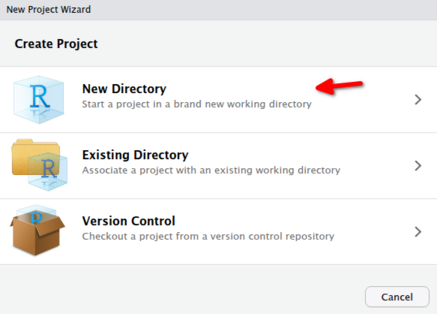
]Escolha o tipo de projeto que deseja criar. Para a maioria dos casos, a opção
New Projecté suficiente, mas existem outras opções comoR Packagepara desenvolvimento de pacotes eShiny Web Applicationpara desenvolvimento de aplicativos Shiny etc…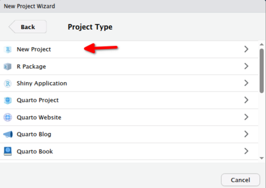
]Dê um nome ao seu projeto e escolha o diretorio onde ele vai ficar
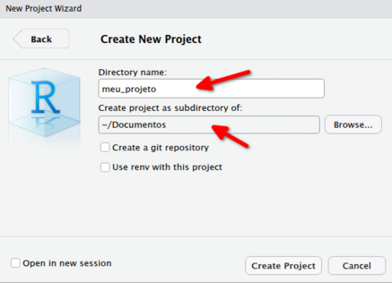
]Clique em
Create Project.
Pronto! Agora você tem um projeto criado, e o RStudio já definiu a pasta do projeto como o diretório de trabalho! Ou seja, nada mais de ficar usando setwd()!
Você pode começar a organizar seus arquivos dentro dessa pasta. Assim, qualquer pessoa que abra o projeto terá acesso aos arquivos corretamente, desde que a estrutura de pastas seja mantida.
Trabalhar em um .proj permite trabalhar com caminhos relativos, por exemplo:
read.csv("data/dados.csv")em vez de caminhos absolutos como:
read.csv("C:/Users/fulaninho/Documentos/projeto/data/dados.csv")Isso evita a dependência da estrutura de pastas do computador, facilitando a reprodutibilidade do código.
1.2.2 Estrutura de pastas recomendada
meu_projeto/
├── dados/ # Dados brutos, arquivos CSV, planilhas, etc.
├── scripts/ # Arquivos R: scripts principais, funções, etc.
├── resultados/ # Resultados da análise: gráficos, tabelas, arquivos processados.
├── docs/ # Documentação: relatórios, apresentações.
├── .Rproj # Arquivo do projeto RStudio (não edite diretamente!).
└── README.md # Descrição do projeto, instruções de uso.Essa estrutura é apenas uma sugestão, e pode ser adaptada conforme as necessidades do seu projeto. O importante é manter uma organização clara e consistente.
O RStudio permite a criação de pastas e gerenciamento de arquivos de dentro da aba “Files”.
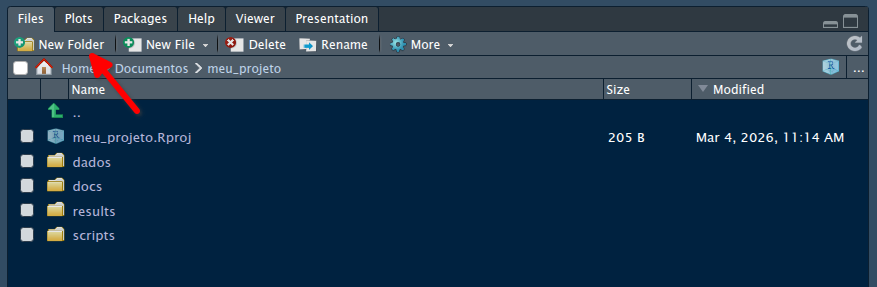
1.3 Controle de versão com Git e Github
1.3.1 O que é Git?
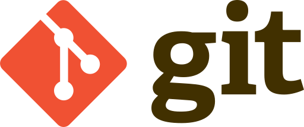
Git é um sistema de controle de versões usado principalmente no desenvolvimento de software, mas pode ser usado para registar o histórico de edições de qualquer tipo de arquivo. O Git foi inicialmente projetado e desenvolvido por Linus Torvalds (criador do Linux), pois ele não estava satisfeito com nenhum dos softwares existentes para controle de versão e ele tinha uma enorme tarefa: o desenvolvimento do kernel Linux. Depois disso, o Git foi adotado por muitos outros projetos nas mais diversas áreas.
Cada projeto no Git é um repositório e possui um histórico completo de todas as modificações em cada um dos arquivos encontrados nesse projeto. Isso permite o total acompanhamento de todas das modificações, não dependente de acesso a uma rede ou a um servidor central para isso. O Git também facilita a reprodutibilidade científica em uma ampla gama de disciplinas pois podemos desenvolver projetos na qual diversas pessoas podem contribuir simultaneamente no mesmo repositório, editando e criando novos arquivos e permitindo que os mesmos possam existir sem o risco de suas alterações serem sobrescritas.
Se não houver um sistema de versão, imagine o confusão que pode ser gerada entre duas pessoas alterando o mesmo arquivo ao mesmo tempo! Uma das aplicações do Git é justamente essa, permitir que um arquivo possa ser editado ao mesmo tempo por pessoas diferentes. Por mais complexo que isso seja, ele tenta manter tudo em ordem para evitar problemas. Além de manter um registo de todas as modificações! Podemos voltar a qualquer versão de um determinado arquivo em qualquer etapa de sua existência.
Abaixo estão alguns conceitos principais do Git. Ao longo do capítulo, você vai entender mais sobre cada um deles.
| Termo | Definição |
|---|---|
| Git | Sistema de controle de versão distribuído que registra mudanças em arquivos ao longo do tempo. |
| Repositório (repo) | Projeto monitorado pelo Git, contendo arquivos e todo o histórico de versões. |
| Repositório local | Cópia do repositório que está na sua máquina. |
| Repositório remoto | Versão do repositório hospedada em um servidor, usada para compartilhamento e colaboração. |
| GitHub / GitLab | Plataformas online que hospedam repositórios Git e oferecem ferramentas para colaboração em projetos. |
| Branch | Linha paralela de desenvolvimento dentro do repositório, permitindo trabalhar em mudanças sem alterar a versão principal. |
| Main/Master | Branch principal do projeto, que normalmente representa a versão estável ou oficial. |
| Commit | Registro de um conjunto de mudanças no repositório, criando um ponto no histórico do projeto. |
| Pull Request | Proposta de integração de mudanças de uma branch para outra, geralmente feita no GitHub ou GitLab. |
Para saber mais sobre o Git, leia este tutorial.
1.3.2 O que é o GitHub?

O GitHub é um serviço web que oferece um servidor Git na nuvem além de funcionalidades extras aplicadas ao Git.
Você poderá se cadastrar e usar gratuitamente o GitHub para hospedar seus projetos pessoais. Além disso, quase todos os projetos de desenvolvimento de código aberto (open source), incluindo vários pacotes do R, estão no GitHub, e você pode acompanhá-los através de novas versões, contribuir informando bugs ou até mesmo enviando código e correções.
Não se deve pensar nele como um Dropbox, mas sim como um repositório de desenvolvimento de projetos onde você pode colocar os seus códigos (em R e outras linguagens) e os seus dados. Ao carregar arquivos no GitHub, eles estão armazenados em um repositório remoto Git. Isso significa que, quando você faz alterações (commits) nos arquivos que estão no GitHub, o Git automaticamente monitora e gerencia essas alterações.
O GitHub pode ser utilizado diretamente pelo navegador, sem necessidade de instalar nenhum programa. É possível criar repositórios, editar arquivos, abrir pull requests e gerenciar projetos totalmente online.
No entanto, para trabalhar com repositórios no seu computador (via terminal ou RStudio, como veremos mais adiante), é necessário ter o Git instalado na máquina.
Há muita praticidade e vantagens em utilizar oGit e o Github nos seus projetos!
1. Deixa seu código atualizado e acessível de qualquer computador.
Desktop de Casa → Trabalho → Notebook → Trabalho → Desktop de Casa
2. Colaboradores podem contribuir sempre a partir da versão mais atualizada.
Seu colega/colaborador não precisa te pedir aquele script_20260301.R por email. Ele pode acessar diretamente o seu repositório quando quiser, até mesmo alterar seu código e enviar uma versão atualizada que você pode aceitar facilmente.
3. Volte a uma versão anterior em caso de problemas.
4. Seu projeto online, público ou privado.
O GitHub permite ter repositórios privados, compartilhados apenas com colaboradores, ou totalmente públicos. Os repositórios públicos no GitHub são amplamente utilizados em publicações científicas para disponibilizar códigos, dados e materiais suplementares.
Ao tornar o repositório público, os autores permitem que outros pesquisadores:
- Acessem o código utilizado nas análises
- Reproduzam os resultados apresentados no artigo
- Verifiquem metodologias e decisões analíticas
- Reutilizem e expandam o trabalho
Dessa forma, o uso de repositórios públicos contribui diretamente para a reprodutibilidade, a transparência e a ciência aberta.
Além do GitHub, outros projetos semelhantes existem, como o Gitlab, um projeto open source que funciona tanto no ambiente nuvem quanto local e que permite que se instale um servidor completo localmente. Para saber mais sobre o Gitlab, clique aqui.
1.3.3 Git vs GitHub
O Git é uma ferramenta open source que roda localmente e controla versões. O GitHub é uma plataforma privada na nuvem que hospeda e gerencia repositórios Git.
| Aspecto | Git | GitHub |
|---|---|---|
| O que é | Sistema de controle de versões gratuito e open-source | Plataforma online de hospedagem de repositórios Git em nuvem, com serviços pagos |
| Quem mantém | Projeto open source (iniciado por Linus Torvalds) | Empresa privada pertencente à Microsoft |
| Onde funciona | Localmente no computador | Principalmente na nuvem |
| Precisa de internet? | Não | Sim |
| Função principal | Controlar versões de arquivos | Compartilhar, colaborar e gerenciar repositórios online |
| Pode existir sem o outro? | Sim | Não (hospeda repositórios Git) |
1.3.4 Criando um repositório no GitHub
O GitHub não possui instalação, ele é um serviço. Caso você não tenha uma conta, pode criá-la, neste link.
Após criar a conta, você verá um botão verde Create repository:
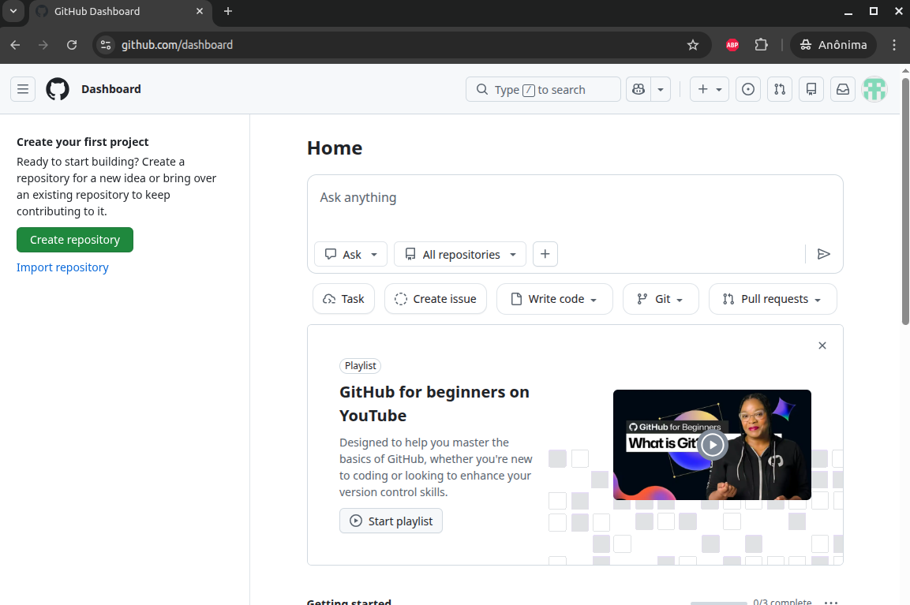
Clique nele para criar um novo repositório. Veja o exemplo abaixo:
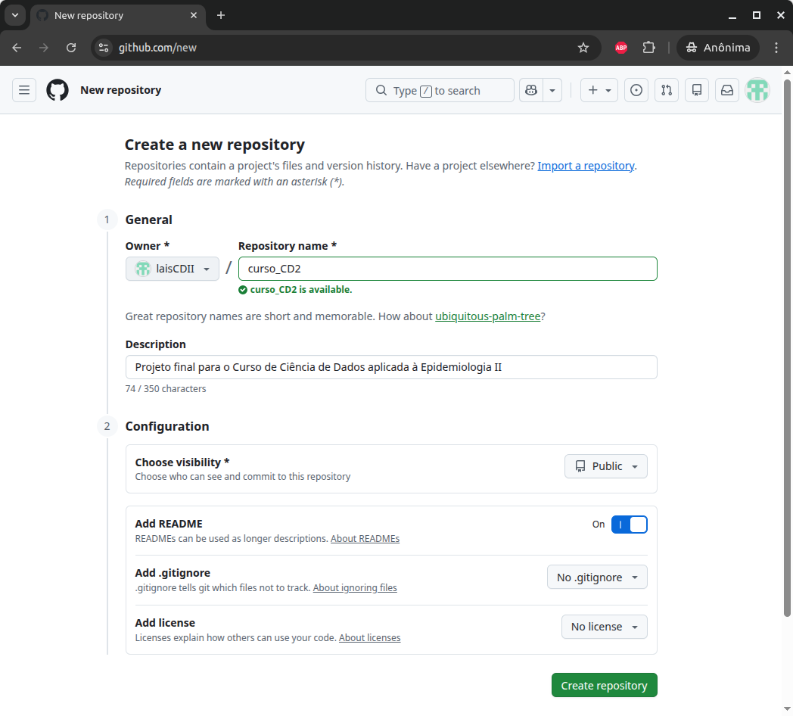
Após colocar o nome do repositório, uma breve descrição e definir as configurações (no exemplo, visibilidade pública e com um arquivo “README”), clique em Create Repository.
Pronto! O seu repositório remoto foi criado!
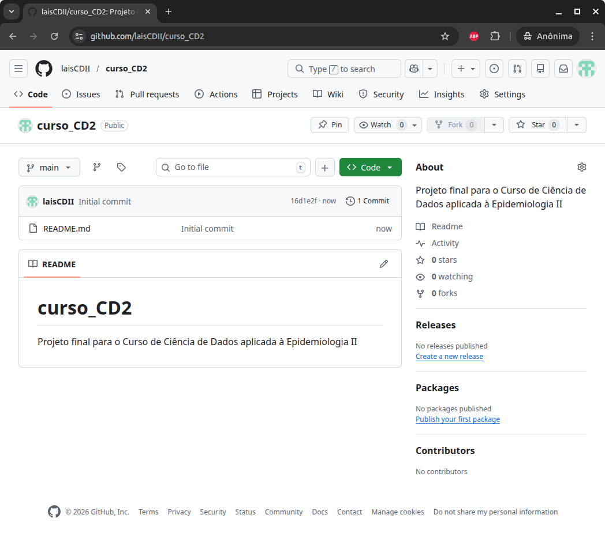
Se você quiser trabalhar no navegador, pode subir arquivos clicando no botão + e Upload Files.
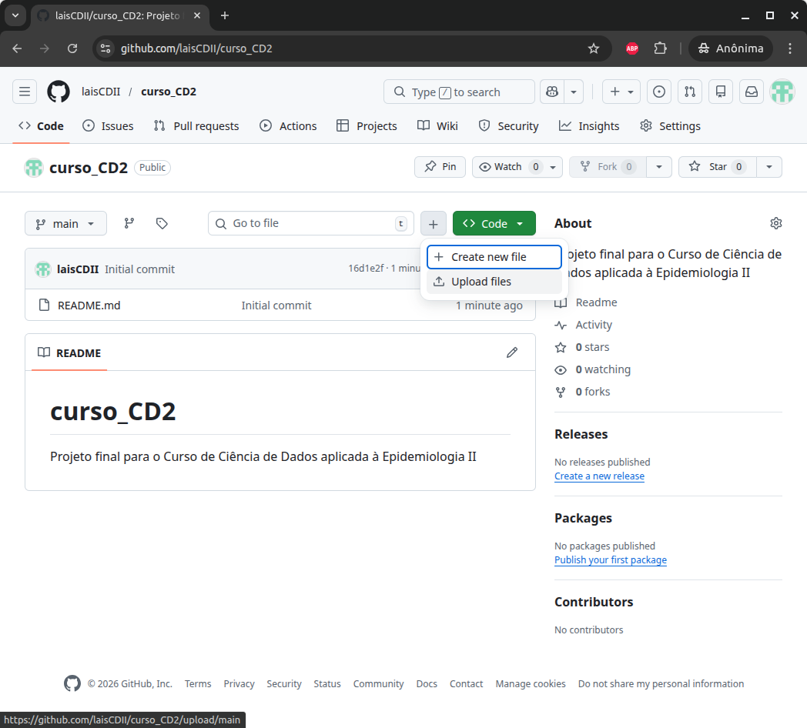
Na tela seguinte, é possível arrastar os arquivos que quer enviar para o seu repositório. Trabalhando online no GitHub, tudo é feito no click click e preenchendo campos. No exemplo abaixo, o commit, ou seja, o registro das mudanças (no caso, o envio dos arquivos novos) é feito clicando o botão Commit changes. É boa prática escrever uma breve mensagem sobre o que o commit se refere.
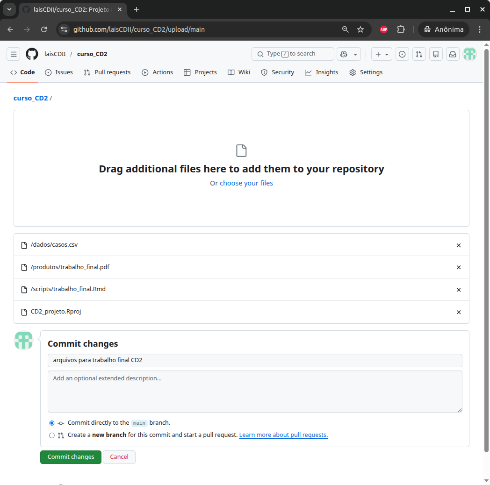
Pronto! Agora o repositório remoto no GitHub contém as pastas e arquivos enviados, além de estar disponível online! No nosso exemplo, no link https://github.com/laisCDII/curso_CD2.
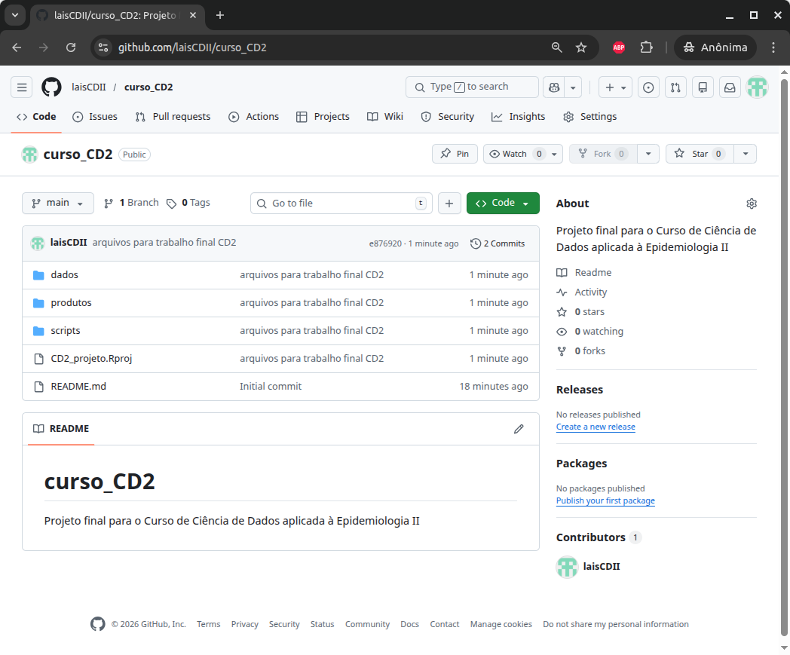
Estes são exemplos de alguns passos iniciais. O uso do GitHub vai muito além disso! A documentação é muito completa e parcialmente disponível em português. Busque conhecê-la e acessá-la em caso de dúvidas em https://docs.github.com/pt.
Até agora, trabalhamos no GitHub apenas online. Para trabalhar localmente (no próprio computador), vamos precisar do Git instalado.
1.3.5 Instalando o Git
1.3.5.1 No Linux
Nas distribuições Ubuntu/Debian, execute no terminal:
sudo apt install git1.3.5.2 No Windows
Baixe o instalador do `Git para Windows em https://git-scm.com/install/windows.

Execute o instalador e siga os passos. Em caso de dúvida, veja este vídeo.
1.3.6 Configurando sua identidade no Git
Se você seguiu os passos do vídeo até o final, já deve ter feito essa configuração.
Tanto no Linux quanto no Windows, os passos para configurar sua identidade no Git (ou seja, como seu nome aparecerá nos commits) são os mesmos:
Abra um terminal, e use os comandos:
git config --global user.name "Seu Nome"
git config --global user.email "seu_email@example.com"O user.name e user.email precisam ser do GitHub? Não obrigatoriamente, mas é altamente recomendável que o e-mail seja o mesmo da sua conta no GitHub, pois o GitHub usa o e-mail para associar o commit à sua conta. Se o e-mail for diferente do que está cadastrado no GitHub, o commit pode não ficar vinculado ao seu perfil.
1.3.7 Integrando Git e GitHub
Agora que temos o Git instalado, podemos conectar nossa máquina ao GitHub e clonar os repositórios associados à sua conta para trabalhar localmente. Quando trabalhamos no computador, estamos usando um repositório local — ou seja, a cópia do repositório que está salva na nossa máquina. Depois, podemos sincronizar esse repositório local com o repositório remoto no GitHub, enviando (push) ou recebendo (pull) alterações.
Vamos começar, então!
1.3.7.1 Conectando o GitHub à maquina local
O Git se conecta ao GitHub por meio de autenticação. Essa autenticação pode ser feita via chave SSH ou usando HTTPS com token.
| Aspecto | SSH | HTTPS + Token |
|---|---|---|
| Configuração inicial | Mais técnica (gerar chave, adicionar ao GitHub) | Mais simples |
| Uso no dia a dia | Não pede senha após configurar | Pode pedir token |
| Segurança | Muito segura (criptografia por chave) | Muito segura (token pessoal) |
| Facilidade para iniciantes | Pode ser confusa no início | Mais intuitiva |
| Uso em múltiplas contas | Exige configuração adicional (~/.ssh/config) |
Pode ser mais simples |
| Uso em computadores públicos | Não recomendado (chave fica na máquina) | Mais fácil de usar temporariamente |
Vamos mostrar como fazer a conexão com a chave SSH. A chave SSH funciona criando uma “identidade criptográfica” no seu computador.
1.3.7.1.1 No Linux
1. Verificar se já existe chave SSH
No terminal:
ls -al ~/.sshSe aparecer algo como id_ed25519 ou id_rsa, você já tem uma chave.
2. Gerar uma nova chave
ssh-keygen -t ed25519 -C "seu_email@example.com"O sistema pergunta:
Enter file in which to save the key (/home/usuario/.ssh/id_ed25519):Se você apenas apertar ENTER, ele usa o nome padrão:
home/usuario/.ssh/id_ed25519Atenção! Se você já possui outra chave ed25519, é melhor salvar a nova em outro arquivo para não sobrescrever. Em vez disso, digite algo como:
home/usuario/.ssh/id_ed25519_trabalhoAperte ENTER.
O sistema te pede para definir uma senha (passphrase), que você pode deixar em branco.
3. Ativar o agente SSH
eval "$(ssh-agent -s)"
ssh-add /home/usuario/.ssh/id_ed255194. Copiar a chave pública
cat /home/usuario/.ssh/id_ed25519.pubCopie todo o conteúdo exibido.
5. Adicionar a chave no GitHub
Na web, abra as suas configurações do GitHub e clique em SSH and GPG keys. Em seguida, clique em New SSH Key.
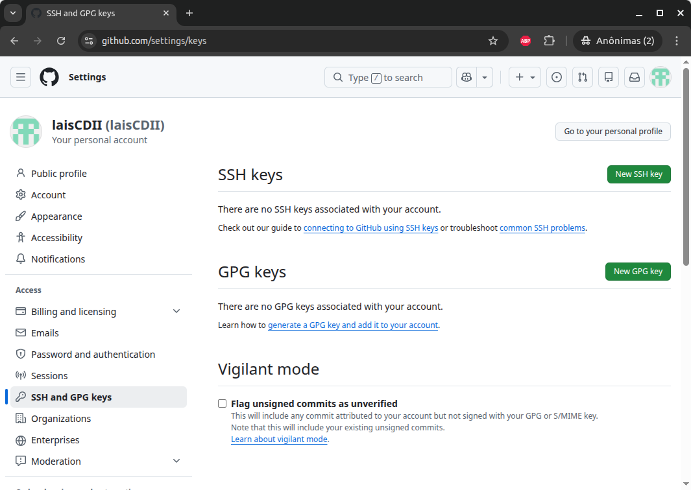
Identifique a máquina à qual pertence a chave no campo “Title”, e cole a chave no campo “Key”. Em seguida, clique em Add SSH key.

6. Testar a conexão
No terminal, digite:
ssh -T git@github.comSe aparecer algo como:
Hi username! You've successfully authenticated...O GitHub está conectado localmente!
1.3.7.1.2 No Windows
No Windows, abra o Git Bash (que vem com a instalação do Git) e siga os mesmos passos descritos acima para o Linux. A única diferença é o local físico do arquivo:
Linux → /home/usuario/.ssh/
Windows → C:\Users\Usuario\.ssh\
1.3.7.2 Clonando um repositório remoto
No GitHub, vá até a página do repositório e clique no botão verde <> Code, e “SSH”, pois é a forma que fizemos a autenticação. Copie o endereço que aparece (no exemplo abaixo, git@github.com:laisCDII/curso_CD2.git):

No seu computador, vá até a pasta onde deseja salvar o projeto, abra o terminal nesta pasta, e execute:
git clone git@github.com:laisCDII/curso_CD2.gitVeja que utilizamos o comando git clone, que é usado para criar uma cópia local de um repositório remoto apenas uma vez. Uma vez que o repositório está clonado, as alterações serão realizadas com outros comandos. Existem vários comandos git [AÇÃO] para trabalhar com o Git. Veremos alguns mais adiante.
Pronto, agora todo o repositório foi clonado localmente:

Atenção! Por padrão, as pastas que começam com . não aparecem no Windows.
Agora você pode trabalhar localmente no repositório!
1.3.7.3 Recebendo e enviando alterações
Agora vamos passar a usar alguns comandos básicos de Git para sincronizar as alterações entre o repositório local (no computador) e o remoto (no GitHub).
Antes de começar a trabalhar em um repositório local, é fundamental que ele esteja sincronizado com a última versão do repositório remoto! Para isso, utiliza-se o comando git pull (no terminal sempre na pasta do repositório Git!).
lais@desktop:~/Documentos/GIT/curso_CD2$ git pull
Already up to date.Após trabalhar localmente, faça essa sequência de comandos no terminal:
git add .
git commit -m 'estrutura do rmd para o trabalho'
git pushO que cada comando faz?
git add .: Diz ao Git quais arquivos modificados você quer incluir no próximo registro de alterações. O ponto (.) significa “todos os arquivos modificados nesta pasta”.
git commit -m "mensagem": Cria um registro permanente das alterações adicionadas. A mensagem deve descrever de forma clara o que foi alterado no projeto.
git push: Envia os commits do repositório local para o repositório remoto, atualizando a versão hospedada no GitHub.
Exemplo:
No meu repositório local “curso_CD2”, alterei o script trabalho_final.Rmd. No terminal, primeiro uso o comando git status para verificar o estado atual do repositório local:
lais@desktop:~/Documentos/GIT/curso_CD2$ git status
No ramo main
Your branch is up to date with 'origin/main'.
Changes not staged for commit:
(utilize "git add <arquivo>..." para atualizar o que será submetido)
(use "git restore <file>..." to discard changes in working directory)
modified: scripts/trabalho_final.Rmd
nenhuma modificação adicionada à submissão (utilize "git add" e/ou "git commit -a")Veja que o sistema me informa que tenho alterações no repositório local ainda não comittadas. Agora, sigo com a sequência add → commit → push:
lais@desktop:~/Documentos/GIT/curso_CD2$ git add .
lais@desktop:~/Documentos/GIT/curso_CD2$ git commit -m 'estrutura do rmd para o trabalho'
[main 873f5eb] estrutura do rmd para o trabalho
1 file changed, 30 insertions(+)
lais@desktop:~/Documentos/GIT/curso_CD2$ git push
Enumerating objects: 7, done.
Counting objects: 100% (7/7), done.
Delta compression using up to 8 threads
Compressing objects: 100% (3/3), done.
Writing objects: 100% (4/4), 833 bytes | 833.00 KiB/s, done.
Total 4 (delta 1), reused 0 (delta 0), pack-reused 0
remote: Resolving deltas: 100% (1/1), completed with 1 local object.
To github.com:laisCDII/curso_CD2.git
e876920..873f5eb main -> mainEsse código (873f5eb) é um hash, ou seja, um identificador único gerado pelo Git. Cada commit tem um hash próprio, o que garante que cada versão do projeto seja única e rastreável. Ao rodar git push, o Git envia essa nova versão para o repositório remoto no GitHub, atualizando a branch main lá também:
e876920..873f5eb main -> mainIsso significa que o repositório remoto avançou do commit e876920 para 873f5eb. Vamos conferir no GitHub na web:

Veja que apenas na pasta onde houve alteração (“scripts”) aparece a mensagem do último commit. Se clicarmos na mensagem, podemos ver detalhes do commit:

Perceba nessa tela a identificação do commit (873f5eb), os arquivos que sofreram alterações do lado esquerdo, e um painel onde é possível ver as linhas adicionadas (verdes) ou excluídas (vermelhas).
1.3.7.4 Principais comandos do Git
Para trabalhar com versionamento e sincronizar alterações entre o repositório local e o remoto, o Git utiliza um conjunto de comandos. A seguir, os principais comandos usados no fluxo básico de trabalho:
| Comando | O que faz |
|---|---|
git clone |
Cria uma cópia local de um repositório remoto. |
git status |
Mostra o estado atual do repositório (arquivos modificados, novos etc.). |
git add |
Seleciona arquivos modificados para serem incluídos no próximo commit. |
git commit -m "mensagem" |
Registra as alterações selecionadas, criando uma nova versão do projeto. |
git push |
Envia os commits do repositório local para o repositório remoto (ex.: no GitHub). |
git pull |
Atualiza o repositório local com as alterações do repositório remoto. |
git fetch |
Baixa alterações do remoto sem integrá-las automaticamente. |
git branch |
Lista ou cria branches no repositório. |
git checkout / git switch |
Muda de branch. |
git merge |
Integra alterações de uma branch em outra. |
git log |
Mostra o histórico de commits do projeto. |
1.4 Integração do RStudio com o Git
O RStudio possui integração nativa com o Git, permitindo usar controle de versão sem precisar sair do ambiente de desenvolvimento. Quando o Git está instalado, o RStudio detecta automaticamente e ativa a aba Git no painel superior direito (desde que o projeto esteja versionado, ou seja, esteja sendo controlado pelo Git).

Neste exemplo o a aba está sinalizando que temos um arquivo modificado que ainda não foi comitado para o servidor. Podemos clicar em Diff e conferir quais foram as alterações:

Veja que tanto nessa janela, quanto na aba Git do painel superior direito temos botões para realizar as ações pull, commit, e push. Há ainda um campo para escrever a mensagem do commit.
Podemos clicar em History e ver o histórico de commits deste projeto:

Como podemos ver, cada alteração no projeto fica registrada ao longo do tempo, criando uma linha do tempo rastreável das decisões analíticas. Esse registro estruturado fortalece a transparência, facilita a colaboração e contribui diretamente para a reprodutibilidade da pesquisa científica! Sem contar que não precisamos ficar manualmente comparando o script_260303_lais.R com o script_260303_lais_oswaldo.R, script_260203_limpo.R, script_260303_final.R, script_260303_final_v2.R, e por aí vai…
Prática
Crie um projeto versionado com Git, conecte-o ao GitHub e registre o histórico inicial do projeto, aplicando os conceitos de repositório local, remoto, commit e push.